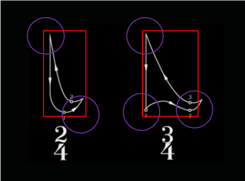

Predicting time signature from musical conducting using pattern classification with accumulator matrix
Raghavasimhan Sankaranarayanan, Kaushal Sali, Christopher Dixon, Phong TranFall 2019 CS 6476 Computer Vision: Class Project
Georgia Tech
Abstract
In music, conducting is the art of directing the simultaneous performance of several players or singers by the use of gesture [1]. A conductor provides visual cues which help the orchestra to play in time and provide information about the variations in dynamics of sound. These visual cues are analogous to hand gestures. In order for a machine or a robot to interact with a human player or with an orchestra, they need a way to understand a conductor's cues in real-time. One common cue that needs to be understood is the time signature of the piece. The time signature indicates the number of beats in each measure in a piece of music. Conductors use different gestures to denote different time signatures. We propose to take a subset of commonly used time signatures (e.g. 2/4, 3/4, 4/4, 5/4, 7/8) and classify them within a video stream of a conductor performing in real-time.
Introduction
In our project, we present a novel method for automatically detecting three of the most common time signatures in musical conducting (e.g. 2/4, 3/4, 4/4). Our method utilizes a series of Computer Vision capabilities, namely the OpenPose pose-estimation framework and a downstream image classifier which receives pose coordinates from the conductor's gestures as input. Our method detects the correct time signature gesture with high accuracy. In the following summary, we describe in detail our proposed method and present the results of our research experiments. Lastly, we suggest further research opportunities utilizing our method.Approach
We intend to use a data driven approach to solve the problem. This is because modelling the movement patterns mathematically is very difficult and won't be effective due to large variations in the patterns - noise. We plan to train a convolutional neural network (CNN) model with accumulator matrices which embed the movement patterns. Note that we will refer to a complete time-signature pattern as gesture in the future. The accumulator matrix is formed by using votes for each point in the matrix that correspond to the spacial movement of the wrist as captured by the images over time (this is discussed in detail in preprocessing). The wrist points are detected using CMU's openpose model [2]. We would also perform polynomial interpolation to fix discontinuity in detection of wrist points. The network will be trained to classify these patterns and predict the time signature. In a real world scenario, the conductor may perform gestures which our model has not seen. For example, when the conductor is doing a gesture for rubato, legato, accelerando etc. It may also happen that the conductor is not performing at all. To account for these, we plan to experiment with two approaches: One approach is to classify all these other or no gestures as a "Other" class. The second approach is to set a threshold of confidence that all predicted class scores must cross to be detected as a gesture.Experiments and results
Data Collection
For data collection we have used videos from Youtube of multiple people conducting basic time signatures lie 2/4, 3/4, and 4/4. We have used OpenPose to extract the skeletal points information for each frame in the videos. For each video we have extracted the stream of coordinates corresponding to the wrists of both hands using OpenPose. These coordinates are saved as csv files. If needed, we may later add more data by recording ourselves performing the gestures.Preprocessing
For data preprocessing we have implemented functions to read the extracted coordinate csv files, clean them, create blocks and generate accumulated matrices from these blocks.Data Cleaning:
The data that we recieve from OpenPose is noisy. Sometimes OpenPose is not able to detect the wrists and so gives output as -1 for x and y coordinates. If the time for which the wrists are not detected is larger then we remove these coordinates. For smaller intervals we interpolate between the points.Blocking:
The data stream is then windowed and converted into smaller chunks or blocks. The block size and hop size for this process can be controlled. The block size has to be such that it encompasses atleast one complete iteration of the gesture being performed. This is a hyperparameter and we will tune it during training and validation. Time signature is independent of the tempo and since music can be at various tempos, the amount of action captured in a block will vary with it. Music at lower tempo will need more time to complete one full cycle of the gesture, so if we take the block size large enough to account for the lowest tempo we should be fine to start with. For visualization in the video below, we have used a blocksize of 100.Creating Accumulator Matrices:
Once we have blocked the data, we create an accumulator matrix like representation for the motion that is traced by the point in each block. The coordinates that we get from openPose are normalized so we can create an accumulator matrix of any size. For visualization purposes we use a size of 500x500. For training, depending on the approach different sizes can be used. For each block, for each point, the pixel of the accumulator matrix at this coordinate is upvoted (set to 255). We compute one matrix for each block. These matrices show the motion traced by the wrist. This accumulator matrix as an image will used as input to the network. This is the gesture that we want our network to learn and classify. The video below shows the generated accumulated matrices for all the csv files.Training & Experiments:
We would be using a multi-layer deep CNN model for the problem. As the input dimension is a constant, we would be using fully connected layers towards the end with a softmax outputting the class probabilities.. We are also looking into using Recurrent layers such as LSTMs to model temporal coherence. We believe this would improve the classification accuracy.Since this is a classification problem, we will use negative log likelihood as the loss function. For optimization, we plan to experiment with regularization methods like dropouts and batch-normalizations to reduce over fitting and also to help improve sparsity.
As mentioned in the approach section, experiments need to be done to see which of the two approachs work best to detect "Other" class.
We will experiment with different block sizes for segmenting the input data. We have assumed that we need atleast one complete iteration of the gesture in a block. We will test this assumption by using smaller blocks that don't cover a full cycle of the time signature gesture.
Current Experiments
Algorithmic Approach to Gesture Detection
For classifications problems being solved with CNN models, it is helpful to have an algorithmic approach as a frame of reference for success and accuracy. One idea that we had for classifying a conductor's gestures was to detect the "inflection points" of a conductor's hand motions. When a conductor moves their hands to coordinate the next beat, they quickly move their hands in a different angle and stop at a different location in space. The order of these stopping locations can be used to detect the time signature.We started by creating a script that watches a person's hand motions for several frames. To conduct a certain time signature, a person must move their hands in a "loop" for each bar of music. This loop can be used to form a bounding box.

Reexamining 2/4 and 3/4 time signatures with a bounding box, we can see that both gestures basically involve moving one's hand to different corners of the bounding box. The motion of the hand will slow down as it approaches the corner, and so will the angle of the movement. This is an inflection point. By tracking these inflection points over time, we can pattern match our set of inflection points with the specific order of inflection points expected by each time signature. For a 2/4 time signature, the hand will move from the top-left, to the bottom-right, and then back to the top-left. For a 3/4 time signature, the hand will move from the top-left, bottom-left, bottom-right, and then back to the top-left. With all this in mind, we created a preliminary demonstration, shown below.
There are some weaknesses to this approach. Some threshold parameters have to be manually tuned in order to define what counts as "moving slowly near a corner". The algorithm also does not produce accurate detection until it has time to define a bounding box. We can see this being a problem if the conductor changes their stance to face a different part of the orchestra. In other words, it can be difficult to track the gesture if the camera isn't facing the conductor head-on. Also, this method can be limited by the framerate of the camera. Fast-paced music requires a conductor to move their hands quickly, and if the camera can't keep up with that, the algorithm does not detect the change in speed and angle accurately. We are still working on detection for a 4/4 time signature, and we are working on testing the algorithm on a larger set of data to gain empirical results on its accuracy.
The source code for the algorithm can be found at https://github.com/conductor-gt-f2019/OpenPoseTest
References
- The Art of Conducting (Garden City, New York: Doubleday, 1959); English edition as The Conductor: His Artistry and Craftsmanship (London: G. Bell & Sons, 1961).
- Cao, Zhe, et al. "OpenPose: realtime multi-person 2D pose estimation using Part Affinity Fields." arXiv preprint arXiv:1812.08008 (2018).